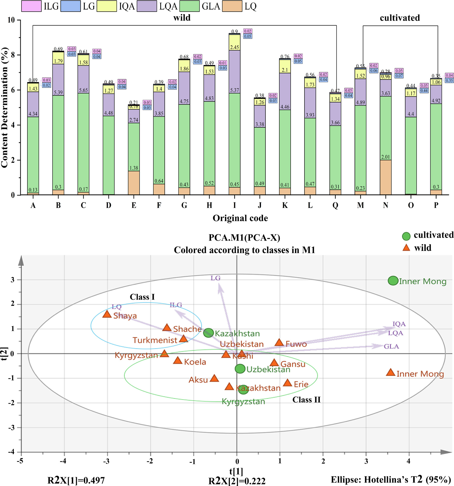

甘草の「トリニティ（三位一体）」指紋評価系 — HPLC・UV・THz量子指紋とMAML多成分定量による総合品質評価
甘草をHPLC＋UV量子指紋＋THz量子指紋の3系統で総合評価し、単一マーカー定量(QAMS)より高精度な新法MAMLと抗酸化スペクトル効果まで統合
- 新法MAML（単一直線法による多マーカー定量）をグリチルリチン酸を測定マーカーに甘草で初検証し、QAMS(単一マーカー多成分定量)より相対誤差が小さいことを実証
- HPLC指紋(3波長融合・25共通ピーク)にUV量子指紋・THz量子指紋を組み合わせた「トリニティ」評価系で85バッチを等級付け（体系的定量化指紋法SQFMが中核）
- DPPHによる抗酸化活性(IC50)とHPLC/UV指紋を二変量相関解析し、フラボノイド類が抗酸化に主に寄与する二次元活性スペクトルを提示
<!-- 方針: ほぼ全訳＋必要に応じた補足。原文構成に沿って訳出。「> 補足:」は訳者注。 -->
書誌情報
- 原題: A trinity fingerprint evaluation system of traditional Chinese medicine
- 著者: Huizhi Yang, Ting Yang, Dandan Gong, Xiaohui Li, Guoxiang Sun（責任著者）, Ping Guo（責任著者）（瀋陽薬科大学 薬学院／中国江蘇省 China Communication Technology (Jiangmen) Co., Ltd.）
- 掲載: Journal of Chromatography A 1673 (2022) 463118. https://doi.org/10.1016/j.chroma.2022.463118
- インパクトファクター: 3.8（Journal of Chromatography A, JCR 2024 / Clarivate, Q1。分析化学・分離科学の代表的国際誌。出典により3.8〜4.2の幅がある）
- 受領 2022-02-26 / 改訂 2022-04-29 / 採録 2022-05-02 / オンライン公開 2022-05-10
- © 2022 Elsevier B.V.
補足: 甘草（licorice, Glycyrrhiza glabra L.）は、抗炎症・鎮咳去痰・解毒などに用いられ、多くの漢方処方の「調和薬（使薬）」として配合される代表的生薬。主要な有効成分はトリテルペノイド系のグリチルリチン酸（甘草酸, GLA）と、多数のフラボノイド類（リクイリチン、リクイリチンアピオシド、イソリクイリチンアピオシド、リクイリチゲニン、イソリクイリチゲニン等）。本論文は、著者らのグループ（瀋陽薬科大学・孫毓慶ら）が長年開発してきた「体系的定量化指紋法（SQFM）」「量子指紋（QFP）」という一連の独自手法を、甘草を題材にHPLC・紫外(UV)・テラヘルツ(THz)の3系統に拡張して統合した「トリニティ（三位一体）」評価系の報告。加えて、単一マーカーで多成分を定量する QAMS を改良した新法 MAML を初めて実物の生薬（甘草）で検証している。
要旨（Abstract）
本研究は、伝統中薬（TCM）の多層性・多特性を反映できる一連の品質評価法の開発に焦点を当てた。甘草（Glycyrrhiza glabra L.）を手法開発試料とし、活性成分間の検量線（標準曲線）の関係性を通じて「単一直線法による多マーカー定量（multi-markers assay by monolinear method, MAML）」の実現可能性を初めて探索した。グリチルリチン酸を測定マーカーとして用いることで、MAML はイソリクイリチゲニン・イソリクイリチンアピオシド・リクイリチゲニン・リクイリチン・リクイリチンアピオシドを含む甘草の5成分を同時に定量できた。MAML と「単一マーカーによる多成分定量（QAMS）」を、それぞれ外部標準法（ESM）と比較したところ、MAML と ESM で算出した成分含量に有意差はなかった（相対誤差 RE は概ね 2.00% 未満）。一方、QAMS で算出した成分含量の RE は大きく変動し、MAML の方が QAMS より正確であることを示した。さらに、区間消去法（interval erasure method, IEM）により UV および THz の量子指紋を新たに構築した。体系的定量化指紋法（SQFM）を中核として、HPLC・UV・THz に基づく「トリニティ」指紋品質評価系を開発した。本系は、13 産地・2 つの生育様式（生態モデル）に由来する甘草試料の品質差を、総合評価結果によって首尾よく判別した。同時に、異なる技術レベルにおける甘草の品質情報が明らかになった。最後に、二変量相関解析（BCA）を用いて UV/HPLC と抗酸化スペクトル効果の連関を検討し、甘草の二次元活性スペクトルを提示した。本手法は、化学指紋の特徴・化学結合の振動特性・生物活性情報の観点から、甘草をはじめ他の TCM に対しても、より徹底的で客観的な分析技術を提供しうる。
1. 序論（Introduction）
2019 年に新型コロナウイルス（2019-nCoV）が発生して以来、伝統中薬（TCM）は中国において予防・治療戦略の要点となっている。一方で、医薬品の安全性は TCM の内部品質と密接に関係する。TCM の内部品質は、産地の違い・栽培方法の違いなど様々な要因により大きく変動しうる。TCM の複雑な混合機構も、その品質管理をより困難にしている。そこで本研究は、13 産地に由来する甘草（Glycyrrhiza glabra L.）85 バッチを手法開発試料として、TCM のための統合的な品質管理法の構築に取り組んだ。
現在、クロマト指紋、とりわけ HPLC 指紋は TCM の品質管理に広く用いられている。しかし HPLC-DAD 指紋分析は通常、あらかじめ定めた 1 波長で測定されるため、一部の物質が単一波長では応答が低すぎて後続のデータ処理に使えなかったり、そもそも検出されなかったりする。単一波長では全化合物の最大 UV 吸収特性を捉えられない。そこで、他波長の指紋情報も考慮し有用情報を掘り起こす場を提供するため、「3 波長最大融合指紋（three-wavelength maximum fusion fingerprint）」が構築された。しかしこの手法もまた、UV 吸収をもつ共通化合物の指紋特徴しか考慮できないという限界があった。この状況下では、複数の検出技術を組み合わせて TCM の品質を管理することが不可欠であった。
- 紫外可視（UV-vis）は主に、共役系や芳香族系成分の不飽和結合の情報を明らかにする。フローインジェクション分析（FIA）法と組み合わせると、低消費・高精度で試料を迅速に分析でき、主観的な波長選択の一面性を回避できる。
- テラヘルツ（THz）応答は分子の集団的挙動と結びつき、TCM 中の高分子（アミノ酸・炭水化物など）の全体構造や、関連する環境情報の振動モードを反映できる。
これら3手法の原理は互いに相補的であるだけでなく、いずれも TCM 分析の分類・類似度評価に一般的に用いられる。しかしスペクトルデータは一般に、連続信号・冗長情報・複雑なグラフィックスという特徴をもち、総合的な定性・定量分析への利用が難しい。この問題を踏まえ、孫毓慶（Guoxiang Sun）教授は「量子指紋（quantum fingerprint, QFP）」を提唱した。これは連続的なスペクトル信号を区間消去法（IEM）によって定量化し、デジタル情報処理による積分・還元の結果をクロマト様の「量子指紋ピーク」として表現するものである。構築された QFP は、対象の情報特徴を網羅しつつ、スペクトル特性をより簡潔かつ直感的にする。TCM の品質は、クロマト（HPLC-FP）とスペクトル（UV-QFP・THz-QFP）に対して体系的定量化指紋法（SQFM）によって評価された。
さらに、TCM は体系的な標準化がまだ達成されておらず、一部の対照標準品は高価で、一部成分の定量が困難である。そこで「単一直線法による多マーカー定量（MAML）」が提案され、本研究で初めて甘草において検証された。MAML は「単一マーカーによる多成分定量（QAMS）」からのさらなる革新である。MAML は、操作誤差を最小化し分析技術の精度を高めるために、線形範囲と体系的方法論、ならびに誤差解析・信頼性解析の理論に焦点を当てる。甘草の定量指紋を用い、本研究ではグリチルリチン酸を測定マーカー（MEMA）とし、定量成分の検量線の下で絶対補正係数を算出し、続いて対応成分の相対補正係数を求めた。
活性化合物の定量制御に加え、甘草試料の in vitro 抗酸化活性を DPPH（1,1-ジフェニル-2-ピクリルヒドラジル）ラジカル消去アッセイにより検討した。二変量相関解析（BCA）を通じて、UV と HPLC の間の抗酸化活性のスペクトル効果関係を議論し、試料の二次元活性プロファイリングを与えた。要するに本論文は、TCM の機能特性・多成分性・多層性などを反映しうる、科学的・厳密・標準化された一連の品質評価法の確立を目指した。
2. 理論（Theory）
2.1. 体系的定量化指紋法（SQFM）
SQFM は、実用的かつ適応性の高い、TCM 系の巨視的（マクロ）な定量評価法である。定性比類似度（$S_F'$）は、大ピークが小ピークを覆い隠すという定性類似度（$S_F$）の問題を克服できる。$S_F'$ はすべての指紋ピークに等しい重みを与える。巨視的定性類似度因子（$S_m$）は TCM の化学指紋の量と分布比を監視して曖昧さを解消するもので、上記2つ（$S_F$ と $S_F'$）の平均である。同様に、定量類似度（$P$）も、射影含量類似度（$C$）における「大ピークが小ピークを隠す」という一面性を克服できる。$P$ と $C$ の平均値を巨視的定量類似度（$P_m$）と呼び、化学指紋の全体含量を監視する指標として全体的に用いる。式(1)–(2)で、$x_i$ と $y_i$ はそれぞれ試料指紋（SFP）と参照指紋（RFP）のピーク面積を表す。RFP は全試料の指紋を平均して得る。
したがって、$S_m$ と $P_m$ の両方を用いて TCM の品質を評価する方法が SQFM であり、両者のうち低い方の値が品質等級を決定する。TCM は以下の8等級に分類される：
- Grade 1 = [$S_m \geq 0.95$、95% $\leq P_m \leq$ 105%]、Grade 2 = [$S_m \geq 0.90$、90% $\leq P_m \leq$ 110%]
- Grade 3 = [$S_m \geq 0.85$、85% $\leq P_m \leq$ 115%]、Grade 4 = [$S_m \geq 0.80$、80% $\leq P_m \leq$ 120%]
- Grade 5 = [$S_m \geq 0.70$、70% $\leq P_m \leq$ 130%]、Grade 6 = [$S_m \geq 0.60$、60% $\leq P_m \leq$ 140%]
- Grade 7 = [$S_m \geq 0.50$、50% $\leq P_m \leq$ 150%]、Grade 8 = [$S_m <$ 0.50、$P_m$ が 50% 未満または 150% 超]
（式(1) $S_m$ はコサイン類似度型の $S_F$ と面積比型の $S_F'$ の平均、式(2) $P_m$ は $C$ と $P$ の平均として与えられる。等級は数字が小さいほど良好。）
補足: 要するに $S_m$ は「ピークの並び・構成パターンがどれだけ揃っているか（定性の一致度）」、$P_m$ は「全体含量が基準に対して何%か（定量の一致度、100%が理想）」を1つの数値に集約した指標。両方を見て、悪い方の値で最終等級（Grade 1〜8）を決める、という考え方。
2.2. 単一直線法による多マーカー定量（MAML）
MAML は QAMS の原理に、TCM の定量指紋の理論を組み合わせた新しいアプローチである。複数の活性化合物の検量線を、指紋検出と同一のクロマト条件下で確立する。測定マーカー（MEMA）の検量線を用いて、他成分の検量線パラメータについて相対補正係数・誤差・信頼性を算出する。許容誤差の範囲内で、検量線法を最大限に簡略化し対照標準品の使用を節約するという目的を達成する。
MEMA（添字 s）と他成分（添字 i）の検量線に基づき、絶対補正係数（$f_i$）を式(3)–(6)のように算出する。$b_{as}=a_s/C_s$、$b_{ai}=a_i/C_i$ の式は、$b_{as}$・$b_{ai}$ が濃度に大きく依存することを示す。濃度が大きいほど「切片/傾き」の比が小さくなり、測定誤差が小さくなる。線形平均濃度 $C_0 = 0.5(C_1 + C_2)$ が、最良の被験試料濃度として一般に受け入れられている。式(7)のように相対補正係数（$f_{si}$）を算出する。$b_a = |a/C| \leq 1\% \cdot b$（誤差 1.0% 未満）のとき、式(8)の傾きの式で直接求めることができ、この比を単純相対補正係数（$f'_{si}$）と呼ぶ。さらに、相対補正係数の誤差（手法信頼性 $R$ と呼ぶ）を式(9)で検討する。$R$ には、秤量誤差（$RSD_{Cs}$）、検量線誤差（$b_{as}/b_s$）、MEMA の相対ピーク面積誤差（$RSD_{As}$）、および他成分の相対ピーク面積誤差（$RSD_{Ai}$）が含まれる。したがって MAML は、QAMS に欠けていた「線形範囲の検査」と「体系的手法の検証」を補い、試験技術者に誤差の除去法を助言することもできる。
主な式：
$$A_s = b_s C_s + a_s \quad (3), \qquad A_i = b_i C_i + a_i \quad (4)$$ $$f_s = A_s/C_s = b_s + a_s/C_s = b_s + b_{as} \quad (5), \qquad f_i = A_i/C_i = b_i + b_{ai} \quad (6)$$ $$f_{si} = f_s/f_i = (b_s + b_{as})/(b_i + b_{ai}) \quad (7), \qquad f'_{si} = f_s/f_i \approx b_s/b_i \quad (8)$$ $$R = 1 - RSD_{Ci} = 1 - \sqrt{RSD_{Cs}^2 + (b_{as}/b_s)^2 + (b_{ai}/b_i)^2 + RSD_{Ai}^2 + RSD_{As}^2} \geq 95.5\% \quad (9)$$ $$C_m = f_{si} \times C_{ms} \times A_m / A_{ms} \quad (10)$$
補足: QAMS（単一マーカーによる多成分定量）は「高価な標準品を全成分そろえなくても、1つの基準成分（ここではグリチルリチン酸）の検量線と、成分間の相対補正係数だけで他成分を定量する」手法。MAML はその発展形で、単に補正係数を使うだけでなく、各成分の線形範囲と誤差・信頼性（式(9)の $R$）まで組み込んで、信頼できる濃度域でだけ換算する点が新しい。式(10)が最終的な含量計算式で、基準成分の濃度・ピーク面積と、相対補正係数 $f_{si}$ から目的成分の含量 $C_m$ を求める。
2.3. TCM の THz 量子指紋の整合性評価系
一般に、テラヘルツ透過スペクトルは THz-TDS（時間領域分光）系で光学パラメータを抽出する最も広く用いられる方法である。主要な抽出の考え方は、光路中で試料の実信号 $E_{sam}(t)$ と、試料を置かないときの参照信号 $E_{ref}(t)$ を測定することである。次にフーリエ変換により、時間領域信号を直接周波数領域信号（$E_{ref}(\omega)$ と $E_{sam}(\omega)$）に変換する。試料の屈折率と吸収係数は、Dorney と Duvillaret が提案した方法でデータ処理して得た。式(11)–(13)で、$n(\omega)$ は試料の屈折率、$\omega$ は周波数、$\varphi(\omega)$ は試料信号と参照信号の位相差、$\alpha(\omega)$ は試料の吸収係数、$A(\omega)$ は周波数領域信号における試料と参照の振幅比、$d$ は試料厚さを表す：
$$\varphi(\omega) = \varphi_{sample}(\omega) - \varphi_{ref}(\omega) \quad (11)$$ $$n(\omega) = \varphi(\omega) c / (\omega d) + 1 \quad (12)$$ $$\alpha(\omega) = (2/d)\ln\left[4n(\omega) / (A(\omega)[n(\omega)+1]^2)\right] \quad (13)$$
これを基に、3.7 節で述べるソフトウェア内で区間消去法（IEM）により量子指紋を確立した。これは本質的に、スペクトルをクロマト様の量子ピークに変換する過程である。式(14)–(16)で、$H$・$A_{bi}$・$W$ はそれぞれピーク高・ピーク面積・ピーク幅を表す。$b_i$ は消去開始点の吸光度、$W$ はピーク幅、$i$ は消去点の個数を示す：
$$H = A_{bi} \quad (14), \qquad A = WH \quad (15), \qquad W = i/200 \quad (16)$$
スペクトル量子指紋の使用は、スペクトル吸収係数の周波数をソフトウェアで定量化し、ピークをクロマト指紋ピークのように照合できるようにすることを目的とする。これは TCM のスペクトログラムの定性・定量分析を可能にする。
3. 材料と方法（Materials and methods）
3.1. 試薬・化学品
野生および栽培の甘草試料（Glycyrrhiza glabra L.）計 85 バッチを、13 か所の異なる産地（補足 Table S1）から収集した。試料は新疆福沃製薬（Xinjiang Fuwo Pharmaceutical Co., Ltd.）が提供し、国内 9 産地と国外 4 産地を含む。
対照標準品：グリチルリチン酸（GLA, 98.5%）、リクイリチゲニン（LG, 98.5%）、イソリクイリチゲニン（ILG, 99.0%）、リクイリチンアピオシド（LQA, 99.0%）、イソリクイリチンアピオシド（IQA, 99.0%）、リクイリチン（LQ, 93.1%）を中国食品薬品検定研究院（NIFDC, 北京）より購入した。HPLC グレードのメタノール・アセトニトリル・リン酸は宇王工業（山東）製。1-ヘプタンスルホン酸ナトリウムは中美化学（山東）より供給。ポリエチレン粉末（AR グレード）は上海冠布機電技術より入手。実験全体を通して脱イオン水を用いた。
3.2. 試料前処理
85 バッチの甘草試料を均一なサイズに粉砕し、40 メッシュ篩でふるい分け、チャック付き袋に入れ、使用前は全て遮光下で保管した。
3.2.1. THz 試料前処理
甘草粉末をあらかじめ電気加熱送風乾燥機（DHG-9070A）で 60 ℃・2 時間乾燥し、取り出してデシケーター中で冷却した。甘草粉末試料を約 0.2 g 秤量し、打錠金型（HY-12）に敷き、24 MPa で 1 分間加圧して、直径 13 mm の円形シートに成形した。
3.2.2. HPLC 試料・標準溶液の調製
試料粉末 1 g を溶媒（80% メタノール水）45 mL で超音波水浴（120 W, 40 kHz, JP-020）中 20 分間抽出した。室温まで静置後、溶媒で 50 mL に定容した。続いて抽出試料溶液を 0.45 µm メンブレンフィルターでろ過して分析に供した。6 化合物を精確に秤量しメタノールに溶解して標準溶液（LQA 100 µg/mL、LQ 60 µg/mL、IQA 100 µg/mL、LG 10 µg/mL、ILG 20 µg/mL、GLA 800 µg/mL）を調製した。分析前、全試料・全標準溶液を 4 ℃・遮光下で保存した。
3.3. HPLC 分析条件
- 装置: Agilent 1260 シリーズ液体クロマトグラフ（Quat Pump VL ポンプ、オートサンプラー、ダイオードアレイ検出器 DAD 装備）
- カラム: COSMOSIL カラム（250 mm × 4.6 mm, 5 µm）
- 移動相: (A) 5 mM 1-ヘプタンスルホン酸ナトリウム溶液–リン酸（499:1, v/v）、(B) アセトニトリル–メタノール（9:1, v/v）
- 流速: 1.0 mL/min
- グラジエント溶出：
| 時間（min） | 移動相 A の比率 |
|---|---|
| 0–13 | 96% → 70% |
| 13–15 | 70% → 67% |
| 15–18 | 67% → 66% |
| 18–40 | 66% → 18% |
| 40–45 | 18% → 15% |
| 45–50 | 15% → 96% |
- 注入量: 5 µL、総分析時間: 50 分、カラム温度: 35 ℃
- DAD 検出波長: 220 nm、250 nm、370 nm
3.4. UV 分光条件
FIA（フローインジェクション分析）を分析原理とし、DAD を備えた Agilent 1100 HPLC システム上で PEEK チューブ（5000 mm × 0.12）を用いて UV スペクトルを記録した。波長範囲 190–400 nm を、波長間隔 1 nm・スリット幅 1 nm で検出した。3.2.2 節で調製した試料溶液を 10 倍希釈後、メタノール水（80:20, v/v）をキャリアとして 5 µL を PEEK チューブに注入した（流速 1 mL/min、35 ℃）。
3.5. THz 分光条件
THz スペクトルデータは CCT-1800 テラヘルツ時間領域分光計（China Communication Technology, 深圳）で測定した。装置を 20 分間予熱後、窒素を導入して試料室の水蒸気を除去し、窒素参照スペクトルを取得した。各試料スペクトルは 100 回スキャンして測定した。
3.6. 抗酸化活性分析
甘草の抗酸化能を確認するため、85 試料に DPPH アッセイを用いた（Jinyu Chen の方法を軽微に改変）。実験前に DPPH 溶液（0.064 mg/mL）を 80% メタノールで調製し遮光保存した。3.2.2 節で調製した甘草試料抽出液を 10 倍希釈し、その 2 mL を一定量（0, 0.3, 0.5, 1, 1.5, 1.8, 2 mL）の DPPH 溶液と混合、80% メタノールで 5 mL に定容した。混合液を暗室で 40 分間十分に反応させ、80% メタノールをブランクとして UV 分光光度計（島津 160A）で 517 nm の吸光度を測定した。各試料は3連で測定した。
DPPH ラジカル消去活性の割合（$RS\%$）は次式で表す：
$$RS\% = \frac{A_0 - (A_s - A_b)}{A_0} \times 100\% \quad (17)$$
$A_0$ は陰性対照溶液（DPPH + 80% メタノール）の吸光度、$A_s$ は試料溶液（DPPH + 試料 + 80% メタノール）の吸光度、$A_b$ はブランク溶液（試料 + 80% メタノール）の吸光度。$RS\%$ 値を試料濃度に対してプロットし、50% 阻害濃度（IC50）を算出した。IC50 は甘草の抗酸化能を表す。
3.7. データ解析
THz 指紋・UV 指紋のデータは、自社開発ソフト「TCM Spectrum Quantum Profiling Consistency Digitized Evaluation System 4.0」（ソフトウェア登録番号 7,037,415, 中国）で解析した。HPLC 指紋は「Digitized Evaluation System for consistency of TCM spectral Fingerprints 4.0」（同 0,407,573, 中国）で解析した。主成分分析（PCA）には Origin 2019b を用いた。
4. 結果と考察（Results and discussion）
4.1. 手法バリデーション
対照標準品と試料の指紋ピークの保持時間と UV スペクトルを比較することで、220 nm においてピーク 7・8・12・17・21・23 がそれぞれ LQA・LQ・IQA・LG・ILG・GLA であると同定した（Fig. 1）。3.3 節で確立した HPLC 法の頑健性をさらに検討するため、S1 を方法論的バリデーションに用いた。6 化合物の目標濃度範囲内で、関連する検量線の相関係数（R）はいずれも 0.999 超であり、良好な直線関係を示した（Table 1）。検出限界（LOD）は 1.5–32.3 ng、定量限界（LOQ）は 4.84–107.66 ng であった。6 化合物の回収率は 97.6%・101.9%・98.6%・97.6%・100.3%・98.5% で、本法の正確性が要件を満たすことを示した。
6 定量ピークの保持時間（RT）とピーク面積（PA）の相対標準偏差（RSD）を用いて、含量測定法の精度・併行精度・安定性を検証した。精度は S1 の 6 回注入で試験し、併行精度は S1 の 6 個の個別試料を分析、安定性は同一試料（S1）が 25 ℃・32 時間以内（0, 2, 4, 6, 8, 12, 24, 32 h）で安定であることを確認した。RT と PA の RSD はそれぞれ 1.0% 未満・2.0% 未満であった。精度・併行精度・安定性から HPLC 指紋の適用性を評価した。GLA（ピーク 23）を参照ピークとし、25 の共通ピークの相対 RT と相対 PA の RSD を算出したところ、それぞれ 0.23% 未満・3.84% 未満であった。
UV 方法論の検討は 3.4 節の条件に従って実施した。精度評価のため同一試料（S1）を連続 6 回注入し、併行精度分析のため 6 個の個別試料（S1）を連続注入した。試料の安定性は 25 ℃・0, 2, 4, 6, 8, 12 h で監視した。220 nm の未分離クロマトグラムにおける RT と PA の RSD で精度・併行精度・安定性を評価し、それぞれ 0.52% 未満・2.07% 未満であった。
さらに、THz-QFP 法の実現可能性を検証し、SQFM のパラメータ $P_m$ に基づいて直線性・精度・併行精度・特異性を検討した。試料 0, 11, 30, 50, 100, 150, 200, 250 mg を精確に秤量し、200 mg 未満の試料にはポリエチレン粉末（PE）を加えて 200 mg とした。3.2.1 節の方法で THz により曲線を記録した（Fig. 1D）。試料質量と $P_m$ をそれぞれ横軸・縦軸として直線回帰式を得た：$P_m = 0.7445m + 14.691$、$r = 0.9935$。試料質量と $P_m$ の間に 11–250 mg の範囲で良好な直線関係があることを示した。3.5 節の方法で S1 試料を連続 6 回測定して精度を評価し、$P_m$ の RSD は 1.34% であった。6 個の S1 試料を分析して併行精度を検討し、$P_m$ の RSD は 1.28% であった。特異性は、試料室に水蒸気ピークがなく PE 粉末が THz 検出を妨害しないことを要件とする。以上の試験結果は、確立した手法が規定要件を満たすことを示した。

Table 1. 6 分析対象物の検量線・LOD・LOQ・回収率。
| 分析対象物 | 回帰式（y = ピーク面積、x = 濃度 µg/mL） | R² | 直線範囲（µg/mL） | LOD（ng） | LOQ（ng） | 回収率（%） | RSD（%） |
|---|---|---|---|---|---|---|---|
| LQ（リクイリチン） | y = 17.388x + 1.6534 | 0.9999 | 14.5–870.5 | 2.2 | 7.3 | 97.6 | 1.09 |
| LG（リクイリチゲニン） | y = 28.829x − 3.1188 | 0.9998 | 4.8–58.1 | 1.5 | 4.8 | 101.9 | 1.25 |
| ILG（イソリクイリチゲニン） | y = 12.072x − 1.0910 | 0.9998 | 1.7–51.2 | 2.6 | 8.5 | 98.6 | 2.50 |
| LQA（リクイリチンアピオシド） | y = 11.902x + 1.9934 | 0.9999 | 15.5–930.6 | 2.3 | 7.8 | 97.6 | 1.48 |
| IQA（イソリクイリチンアピオシド） | y = 5.8756x + 0.0158 | 0.9998 | 34.9–418.3 | 5.2 | 17.4 | 100.3 | 3.80 |
| GLA（グリチルリチン酸） | y = 1.0623x + 0.2017 | 0.9995 | 64.6–1938.0 | 32.3 | 107.7 | 98.5 | 2.10 |
補足: 要旨・本文では LOQ を「4.84–107.66 ng」と記すが、Table 1 の実値は最小 4.8（LG）・最大 107.7（GLA）で整合する（丸めの差）。GLA（グリチルリチン酸）は含量が桁違いに高いため直線範囲・LOD/LOQ も大きく設定されている点に注意。
4.2. 6 成分の定量分析
4.2.1. MAML 定量分析
MAML が QAMS に代わって甘草の活性成分をより正確に定量できるかを探るため、外部標準法（ESM）・QAMS・MAML の3手法で 6 物質の濃度を測定した（補足 Table S3）。ESM では、Table 1 の直線回帰式で定量成分の含量を容易に算出できる。GLA を MEMA とし、残り 5 化合物の含量を Zhimin Wang らの QAMS に従って算出した。2.2 節の MAML 原理に基づき、GLA を同じく MEMA とした。まず、手法信頼性 $R$ は 95.5% 超であった（Table 2）。次に ILG・LG・IQA・LQ・LQA の相対補正係数を算出した。最後に、ESM で算出した GLA 濃度とピーク面積を用い、式(10)により 5 物質の含量を得た。
QAMS と MAML の差異を比較するため、それぞれの ESM に対する相対誤差（RE）を別々に算出した（補足 Table S4）。結果として、MAML の RE は QAMS の RE より有意に小さく、特に甘草中で高含量の LQA・LQ・IQA で顕著であった。MAML の RE は基本的に 0.50% 未満で、大半は 0.10% すら超えなかった。これは MAML と ESM の結果に有意差がないことを示す。ただし、一部の ILG・LG の RE は 2.0% を超えたが、これは両成分の含量が 4 µg/mL 未満と低いためであった。要約すると、MAML はより信頼できる正確性を備えた革新的手法であることが強く証明された。MAML は、検出コストと分析時間を削減するという QAMS の利点を継承しつつ、TCM の整合性評価のための定量指紋制御法を提供する。
Table 2. MAML により得た甘草の各パラメータ値。（$C_0$: 線形平均濃度、$b_{ai}$: 切片傾き、$b$: 傾き、$f_i$: 絶対補正係数、$f_{si}$: 相対補正係数、$f'_{si}$: 単純相対補正係数、$R(i)$: 手法信頼性）
| 分析対象物 | $C_0$ | $b_{ai}$ | $b$ | $f_i$ | $f_{si}$ | 1% $b_i$ | $f'_{si}$ | $R(i)$/% |
|---|---|---|---|---|---|---|---|---|
| GLA | 1001.30 | −0.0002 | 1.0621 | 1.0000 | 0.0106 | 1.0000 | — | — |
| ILG | 26.45 | −0.0412 | 12.0308 | 0.0883 | 0.1207 | 0.0880 | 97.53 | |
| LG | 31.45 | −0.0992 | 28.7298 | 0.0370 | 0.2883 | 0.0368 | 97.97 | |
| IQA | 226.60 | 0.0001 | 5.8757 | 0.1808 | 0.0588 | 0.1808 | 98.17 | |
| LQ | 442.50 | 0.0037 | 17.4017 | 0.0610 | 0.1740 | 0.0611 | 98.34 | |
| LQA | 473.05 | 0.0042 | 11.9042 | 0.0892 | 0.1190 | 0.0893 | 98.25 |
補足: 原文 Table 2 は列見出しが「$f_{si}$」「1% $b_i$」「$f'_{si}$」の順に並び、値は $f_{si}$ 列と $f'_{si}$ 列にそれぞれ入る（GLA 行は基準成分のため $R$ は「—」）。各成分の信頼性 $R(i)$ がいずれも 95.5% 超で、MAML の適用条件（式(9)）を満たしていることが確認できる。
4.2.2. 試料分析
6 活性成分の百分率含量を用いて、13 産地の栽培・野生甘草試料の品質を判別した（Table 3）。85 甘草試料の LQ の平均百分率含量は 0.43% で、2020 年版中国薬典（Ch.P.）が定める含量（LQ ≥ 0.50%）に達したのは 23 バッチのみであった。GLA の平均百分率は 4.14% で、S71（1.00%）と S79（1.95%）を除いて適格であった（GLA ≥ 2.0%, 2020 Ch.P.）。試料中の IQA は 0.10%–1.11%、LG と ILG の含量はほぼ 0.10% と低かった。全体として 6 活性成分の含量は著しく多様で、85 試料の平均百分率含量は GLA > LQA > IQA > LQ > LG > ILG の順であった。
6 成分の含量は産地間で変動した（Fig. 2）。最も高かったのは Shaya（沙雅, 9.24%）で、次いで Kyrgyzstan（キルギス, 8.23%）・Turkmenistan（トルクメニスタン, 8.09%）。対照的に、6 化合物の総百分率含量が最も低かったのは内モンゴル（Inner Mongolia, 5.17%）で、次いで Erie（額日, 5.56%）・Fuwo（福沃, 5.87%）。6 成分の含量は生育環境ごとに異なり、カザフスタンと内モンゴルの野生試料の 6 分析化学品の総百分率含量は栽培試料よりはるかに低かった。一方、キルギスでは逆の特徴を示し、キルギスの栽培試料（S49–S52, Table 3）では ILG 含量が基本的に無視できるほど低かった。Fig. 2A から、内モンゴルの LQ 含量が他の 12 産地より概して高いことも分かった。ウズベキスタン・キルギスの栽培試料は他産地より LG 含量がはるかに多かった。
明らかに 6 マーカーは大きく変動した。したがって、マーカー化合物の定量分析だけで甘草の品質を評価することには限界があり、さらなる統計的手法（ケモメトリクス）が必要であった。
Table 3. 甘草 85 バッチの 6 マーカーの百分率含量（%）と IC50 値。（IC50 の単位は原文表記のまま。値が小さいほど抗酸化能が高い）
| 試料 | LQ | GLA | LQA | IQA | LG | ILG | IC50 | 試料 | LQ | GLA | LQA | IQA | LG | ILG | IC50 |
|---|---|---|---|---|---|---|---|---|---|---|---|---|---|---|---|
| S1 | 0.07 | 4.32 | 1.53 | 0.56 | 0.01 | 0.04 | 0.5531 | S44 | 1.28 | 3.06 | 1.19 | 0.36 | 0.17 | 0.02 | 0.3664 |
| S2 | 0.13 | 4.01 | 1.43 | 0.52 | 0.03 | 0.04 | 0.3145 | S45 | 0.04 | 4.9 | 1.06 | 0.45 | 0.03 | 0.02 | 0.4276 |
| S3 | 0.19 | 4.7 | 1.34 | 0.39 | 0.01 | 0.02 | 0.3215 | S46 | 0.03 | 3.71 | 0.79 | 0.29 | 0.04 | 0.01 | 0.4275 |
| S4 | 0.12 | 6.65 | 2.09 | 0.89 | 0.03 | 0.06 | 0.4544 | S47 | 0.09 | 3.78 | 1.28 | 0.49 | 0.06 | 0.01 | 0.4358 |
| S5 | 0.19 | 4.95 | 1.72 | 0.66 | 0.05 | 0.02 | 0.1056 | S48 | 0.09 | 5.19 | 1.54 | 0.53 | 0.05 | 0.01 | 0.3326 |
| S6 | 0.59 | 4.57 | 1.57 | 0.53 | 0.02 | 0.01 | 0.1010 | S49 | 0.41 | 4.97 | 1.16 | 0.33 | 0.02 | 0 | 0.1822 |
| S7 | 0.14 | 6.53 | 2 | 0.82 | 0.06 | 0.03 | 0.1411 | S50 | 0.27 | 5.24 | 0.87 | 0.26 | 0.07 | 0 | 0.1834 |
| S8 | 0.26 | 5.47 | 1.68 | 0.56 | 0.02 | 0.05 | 0.1143 | S51 | 0.4 | 5.02 | 1.15 | 0.38 | 0.04 | 0 | 0.1535 |
| S9 | 0.1 | 4.96 | 1.05 | 0.45 | 0.04 | 0.04 | 0.3007 | S52 | 0.12 | 4.43 | 1.04 | 0.44 | 0.03 | 0 | 0.2064 |
| S10 | 0.01 | 4.08 | 1.67 | 0.64 | 0.07 | 0.05 | 0.1411 | S53 | 0.27 | 2.78 | 1.08 | 0.37 | 0.11 | 0.04 | 0.2246 |
| S11 | 0.07 | 4.22 | 0.99 | 0.38 | 0.03 | 0.04 | 0.1143 | S54 | 0.71 | 4.6 | 1.88 | 0.6 | 0.05 | 0.07 | 0.3149 |
| S12 | 0.05 | 5.13 | 1.15 | 0.46 | 0.03 | 0.04 | 0.3301 | S55 | 0.5 | 4.94 | 2.56 | 0.9 | 0.04 | 0.04 | 0.1184 |
| S13 | 0.54 | 3.26 | 0.89 | 0.27 | 0.03 | 0.03 | 0.3918 | S56 | 0.3 | 4.42 | 1.98 | 0.7 | 0.04 | 0.1 | 0.1318 |
| S14 | 1.45 | 2.14 | 0.59 | 0.14 | 0.03 | 0.03 | 0.1411 | S57 | 0.14 | 3.55 | 1.92 | 0.7 | 0.07 | 0.08 | 0.1638 |
| S15 | 2.09 | 2.83 | 0.86 | 0.21 | 0.04 | 0.03 | 0.1143 | S58 | 0.31 | 3.99 | 1.46 | 0.47 | 0.21 | 0.07 | 0.2029 |
| S16 | 0.75 | 4.27 | 1.61 | 0.46 | 0.07 | 0.03 | 0.2316 | S59 | 0.18 | 3.62 | 1.98 | 0.58 | 0.04 | 0.02 | 0.1650 |
| S17 | 0.39 | 3.43 | 1.46 | 0.41 | 0.01 | 0.02 | 0.6318 | S60 | 0.36 | 4.15 | 1.52 | 0.54 | 0.02 | 0.05 | 0.2967 |
| S18 | 0.79 | 3.84 | 1.12 | 0.29 | 0.03 | 0.01 | 0.5279 | S61 | 0.45 | 2.9 | 1.28 | 0.44 | 0.04 | 0.04 | 0.2073 |
| S19 | 0.45 | 3.34 | 0.86 | 0.24 | 0.01 | 0.03 | 0.5334 | S62 | 0.31 | 4.13 | 1.38 | 0.43 | 0.03 | 0.05 | 0.1784 |
| S20 | 0.31 | 4.92 | 2.17 | 0.85 | 0.03 | 0.02 | 0.2633 | S63 | 0.4 | 4.05 | 1.39 | 0.53 | 0.03 | 0.03 | 0.1411 |
| S21 | 0.52 | 6 | 2.54 | 0.94 | 0.05 | 0.02 | 0.2676 | S64 | 0.1 | 2.3 | 0.76 | 0.25 | 0.04 | 0.04 | 0.3921 |
| S22 | 0.44 | 3.18 | 1.38 | 0.4 | 0.02 | 0.02 | 0.3921 | S65 | 0.41 | 4.49 | 1.75 | 0.62 | 0.02 | 0.03 | 0.3241 |
| S23 | 0.57 | 6.51 | 1.32 | 0.41 | 0.06 | 0.01 | 0.3241 | S66 | 0.4 | 3.93 | 1.19 | 0.44 | 0.02 | 0.06 | 0.1141 |
| S24 | 0.56 | 4.81 | 1.9 | 0.65 | 0.02 | 0.01 | 0.2457 | S67 | 0.17 | 2.89 | 0.63 | 0.23 | 0.03 | 0.04 | 0.2083 |
| S25 | 0.53 | 6.36 | 2.94 | 1.11 | 0.04 | 0.02 | 0.3033 | S68 | 0.19 | 2.78 | 1.27 | 0.42 | 0.01 | 0.02 | 0.2397 |
| S26 | 0.69 | 5.63 | 2.04 | 0.78 | 0.07 | 0.03 | 0.2669 | S69 | 0.32 | 4.45 | 1.21 | 0.41 | 0.03 | 0.04 | 0.1919 |
| S27 | 0.13 | 4.13 | 2.37 | 0.8 | 0.03 | 0.01 | 0.1184 | S70 | 0.25 | 3.64 | 1.07 | 0.39 | 0.02 | 0.04 | 0.1609 |
| S28 | 0.59 | 3.52 | 1.49 | 0.41 | 0.03 | 0.03 | 0.1318 | S71 | 0.05 | 1 | 0.26 | 0.1 | 0.01 | 0.03 | 0.2804 |
| S29 | 0.35 | 3.87 | 1.27 | 0.45 | 0.03 | 0.02 | 0.4121 | S72 | 0.18 | 2.96 | 0.9 | 0.29 | 0.02 | 0.03 | 0.2043 |
| S30 | 0.54 | 2.75 | 1.02 | 0.27 | 0.03 | 0.02 | 0.3006 | S73 | 0.41 | 2.98 | 0.98 | 0.36 | 0.03 | 0.04 | 0.2025 |
| S31 | 0.26 | 4.98 | 2.46 | 0.91 | 0.04 | 0.02 | 0.1184 | S74 | 0.2 | 4.18 | 1.85 | 0.73 | 0.06 | 0.05 | 0.3921 |
| S32 | 0.52 | 5.74 | 2.84 | 1.04 | 0.07 | 0.02 | 0.1318 | S75 | 0.15 | 2.48 | 1.23 | 0.32 | 0.06 | 0.08 | 0.3241 |
| S33 | 0.2 | 2.65 | 1.01 | 0.34 | 0.04 | 0.03 | 0.4348 | S76 | 0.37 | 4.29 | 2.35 | 0.81 | 0.03 | 0.06 | 0.3184 |
| S34 | 0.66 | 4.34 | 1.85 | 0.6 | 0.04 | 0.03 | 0.3395 | S77 | 0.14 | 2.06 | 0.61 | 0.22 | 0.03 | 0.04 | 0.3500 |
| S35 | 0.25 | 3.07 | 1.47 | 0.47 | 0.02 | 0.01 | 0.3541 | S78 | 0.35 | 4.85 | 1.43 | 0.51 | 0.03 | 0.03 | 0.3921 |
| S36 | 0.51 | 4.37 | 1.86 | 0.6 | 0.07 | 0.01 | 0.2184 | S79 | 0.08 | 1.95 | 0.41 | 0.13 | 0.06 | 0.04 | 0.3241 |
| S37 | 0.14 | 5.72 | 1.67 | 0.64 | 0.04 | 0.03 | 0.1318 | S80 | 0.49 | 4 | 1.51 | 0.55 | 0.07 | 0.04 | 0.3380 |
| S38 | 0.41 | 5.01 | 1.44 | 0.5 | 0.04 | 0.01 | 0.1688 | S81 | 0.35 | 4.1 | 2.02 | 0.74 | 0.05 | 0.03 | 0.4525 |
| S39 | 0.16 | 4.2 | 1.55 | 0.57 | 0.06 | 0.01 | 0.5155 | S82 | 0.23 | 4.58 | 1.12 | 0.38 | 0.02 | 0.05 | 0.1678 |
| S40 | 0.2 | 4.61 | 1.41 | 0.5 | 0.09 | 0.01 | 0.1958 | S83 | 0.17 | 3.78 | 0.92 | 0.37 | 0.07 | 0.05 | 0.3334 |
| S41 | 2.72 | 3.2 | 0.58 | 0.17 | 0.03 | 0.05 | 0.1935 | S84 | 0.2 | 5.74 | 1.65 | 0.61 | 0.03 | 0.08 | 0.1390 |
| S42 | 2.28 | 5.64 | 1.2 | 0.37 | 0.04 | 0.09 | 0.1935 | S85 | 1.22 | 4.11 | 0.59 | 0.21 | 0.03 | 0.09 | 0.1801 |
| S43 | 1.77 | 2.63 | 0.85 | 0.21 | 0.02 | 0.02 | 0.3413 | 平均 | 0.43 | 4.14 | 1.42 | 0.49 | 0.04 | 0.03 | 0.2684 |
4.2.3. 主成分分析（PCA）
上記 6 指標の判別能を詳細に調べるため、試料の産地を区分基準とし、PCA で産地に基づく平均化データの次元を削減した。PCA モデルの二次元行列は 17 の観測と 6 変数（17 × 6）から成り、総分散 71.9%（PC1 = 49.7%, PC2 = 22.2%）を示した。さらに、LG・ILG・LQ の 3 変数は PC1 と負の相関、IQA・LQA・GLA は PC1 と正の相関があり、全変数が PC2 と正の相関を示した（Fig. 2B）。
17 観測は主に 4 カテゴリーに分けられた。Shaya・Shache・Turkmenistan の野生試料とカザフスタンの栽培試料は 1 クラス（Class I）に、Koela・Aksu・Kashi・Kazakhstan・Gansu・Erie の野生試料とキルギス・ウズベキスタンの 2 様式の試料はもう 1 クラス（Class II）に分けられた。このうち LG・ILG・LQ が Class I の判別に大きく寄与した。Fuwo の試料（Class III）は IQA・LQA・GLA の含量に影響され、PC1・PC2 と正の相関を示した。内モンゴルの試料（Class IV）は産地間で有意な差があり、栽培生育様式下の観測値は 95% 信頼区間の外に落ち、外れ値とみなせた。この現象の理由は、内モンゴルの LQ 含量が他産地より有意に高く、6 マーカーの全体含量（Fig. 2B, E）が低かったことによる可能性がある。
しかし Class II の座標位置は、PCA における 6 化合物の標識重み（loading）が大きくないことを示し、6 化合物では甘草の内部品質全体を代表できないこと、すなわち指紋によるさらなる評価・制御が必要であることを示唆した。

4.3. 指紋分析
4.3.1. HPLC の融合指紋分析
甘草の主要化学成分である GLA（ピーク 23）と LQ（ピーク 8）は、220 nm と 250 nm で強い UV 吸収を示した。加えて、甘草試料の異なる波長での UV 吸収には明らかな差があった（Fig. 1C）。9–17 分のピークは 220 nm で最大応答を示し、17–25 分と 25–35 分のピークはそれぞれ 370 nm と 250 nm で最大吸収を示した。そこで、物質の UV 吸収を最大化するため、3 波長最大融合指紋を構築した。
各波長での総指紋ピーク数は、25（220 nm）・13（250 nm）・10（370 nm）と決定された。85 バッチ試料のクロマト信号を 3.7 節のソフトに取り込み、最大吸収ピークを融合基準として、25 の共通ピークをもつ 3 波長融合指紋を生成した。異なる融合時間窓における $S_m$・$P_m$・$n$（総指紋ピーク数）・$m$（ベースライン分離ピーク数、分解能 R ≥ 1.5）を比較した（Fig. 1B）。全体の化学指紋量と全体含量を可能な限り正確に検出するには、$S_m$ と $P_m$ をそれぞれ 0.70 超・70%–130% の範囲で選ぶべきである。さらに、$m$ 値が大きいことを前提に、より大きな $m/n$ 比を選ぶべきで、これは有効ピークの情報を保持しつつ不純物ピークの影響を除去する。
結果として、融合時間窓の幅を 0.2 分に設定したとき、良好な類似度と適切なピーク数が得られた。よって 3 検出波長のクロマトグラムを 0.2 分の融合時間窓で融合した。
4.3.2. HPLC 指紋類似度の定性・定量分析
85 試料の *.CDF を 4.3.1 節の融合法で積分し、計 25 ピークをもつ 85 の合成クロマト指紋（CSF）を得た。産地に従い全試料を平均法でそれぞれ算出し、野生・栽培の産地を含む 17 対応地域の参照指紋（RFP）を取得した。UV/THz 産地試料の指紋も同様に得た（Fig. 3C）。SQFM に基づき、$S_m$・$P_m$ 値で各産地の甘草の内部品質を評価した。Table 4 のとおり、内モンゴルを除く他地域の $S_{m\text{-HPLC}}$ 値は 0.800–0.900 の間で、大半の地域の試料の化学組成または分布比の類似度が低いことを意味した。しかし、異なる産地間で化学組成含量に有意な差があり、$P_{m\text{-HPLC}}$ 値は大きく変動した（68.0%–130.0%）。内モンゴル試料の内部品質は他地域と有意に異なり、これが PCA スコア散布図（Fig. 2B）での内モンゴル試料の異常分布を説明した。要するに SQFM は、定性・定量の両観点から甘草試料の指紋を評価でき、正しい品質管理のための手法を提供する。
4.3.3. UV・THz スペクトル量子指紋の開発と確立
連続信号を簡略化し評価を容易にするため、量子分光がもとのスペクトル計算を置き換えてデータを簡略化できるかを探った。85 甘草試料の UV・THz 指紋を、米国分析化学会が定めるクロマト積分ファイル（*.CDF）形式に変換した。2.3 節の IEM の原理に従い、THz 指紋ピークの処理モードをピーク幅 2・区間点 5, 8, 15 で検討した（Fig. 3B）。THz 指紋の元のプロファイルとデータ情報を保つため、最終的にピーク幅 2・区間点 5 の条件を選んで THz-QFP を形成した。生の THz 指紋と THz-QFP のパラメータ（$S_m$・$P_m$）にそれぞれ t 検定を行い、t 検定の P 値は 0.05 超（両側）で、両者に有意差がないことを示した。UV-QFP も同様に処理した（Fig. 3A）。85 の UV-QFP／THz-QFP を産地別に分類し、各産地の RFP を算術平均法で得て、甘草の二重スペクトル量子指紋の類似度を評価した（Fig. 3C, D, E）。
UV-QFP の評価結果では、内モンゴルを除く他地域の試料の $S_{m\text{-UV}}$ はすべて 0.990 超であった（Table 4）。内モンゴル甘草の成分分布比が他地域と有意に異なることが再確認された。190–400 nm の範囲で、$S_{m\text{-UV}}$ と極端に変動する $P_{m\text{-UV}}$ により試料は 4 等級に分けられた。他の 2 種の指紋特性情報と異なり、$S_{m\text{-THz}}$ は大きく変動し（0.732–0.947）、$P_{m\text{-THz}}$ は比較的安定していた。試料は 4 等級に分けられた（Table 4）。さらに、栽培生育試料の品質等級が野生のものより有意に高いことが示された。人工管理後の栽培試料は野生のものより成分の量・含量が比較的安定していると推察される。
特筆すべきは、3 検出技術で得た指紋の品質等級がかなり異なった点で、これは HPLC 指紋で共通成分とみなされない余分なピークによる可能性がある。不飽和結合と助色団は、クロマトグラフィーより UV スペクトルへの寄与が大きいかもしれない。補足的に、THz 技術は主に甘草試料中のアミノ酸・多糖などの生体分子の分析に用いられる。同時に、低周波の結合振動や結晶フォノン振動を含む多くの分子振動がそのスペクトルに反映される。これは、単一の検出技術が一面的で、多次元の化学成分のモードと特徴を提供できず、TCM の総合的品質管理を制約することをさらに示す。

4.3.4. HPLC-FP・UV-QFP・THz-QFP の総合評価
甘草試料の品質を多次元的に評価し品質等級を統一するため、HPLC・UV・THz 指紋に基づく総合評価法を提案した。式(18)–(19)により、平均アルゴリズムで 2 パラメータ（$S_{m\text{-HPLC+UV+THz}}$ と $P_{m\text{-HPLC+UV+THz}}$）を評価する。
$$S_{m\text{-HPLC+UV+THz}} = \frac{1}{3}(S_{m\text{-HPLC}} + S_{m\text{-UV}} + S_{m\text{-THz}}) \quad (18)$$ $$P_{m\text{-HPLC+UV+THz}} = \frac{1}{3}(P_{m\text{-HPLC}} + P_{m\text{-UV}} + P_{m\text{-THz}}) \quad (19)$$
異なる産地の甘草試料の総合品質評価結果を Table 4 に示した。13 産地のうち、内モンゴル・Erie・Koela が Grade 4、Turkmenistan・Gansu・Shaya・Shache・Kyrgyzstan が Grade 3、残りの地域は Grade 2 と評価された。総合評価パラメータは、内モンゴルを除き、残り 3 地域の栽培試料の $S_{m\text{-HPLC+UV+THz}}$ が野生のものより大きく、対応する $P_{m\text{-HPLC+UV+THz}}$ の変動が小さいことを示した。これは人工管理された甘草試料が高い内部品質の類似度をもつことを示す。結論として本研究は、試料の化学組成の類似度と、全体の化学結合の振動スペクトルの類似度を組み合わせた。これにより、検出原理・検出範囲の違いに起因して単一の指紋法が評価結果に偏りをもたらす可能性を回避した。したがって、本研究で提案した総合評価は優れた品質管理法であった。
Table 4. SQFM による 2 生育様式・17 地域の評価結果。（Grade は数字が小さいほど良好。$S_m$ は類似度、$P_m$ は含量類似度%）
| 地域 | S_m-HPLC | P_m-HPLC | Grade | S_m-THz | P_m-THz | Grade | S_m-UV | P_m-UV | Grade | S_m-総合 | P_m-総合 | Grade |
|---|---|---|---|---|---|---|---|---|---|---|---|---|
| Turkmenistan | 0.886 | 121.4 | 3 | 0.801 | 100.5 | 4 | 0.995 | 69.4 | 6 | 0.894 | 97.1 | 3 |
| Fuwo | 0.828 | 83.3 | 4 | 0.891 | 99.9 | 3 | 0.995 | 110.1 | 3 | 0.904 | 97.8 | 2 |
| Gansu | 0.835 | 86.7 | 4 | 0.853 | 95.6 | 3 | 0.993 | 74.5 | 5 | 0.894 | 85.6 | 3 |
| Koela | 0.647 | 93.7 | 3 | 0.883 | 95.7 | 3 | 0.999 | 103.7 | 2 | 0.843 | 97.7 | 4 |
| Aksu | 0.883 | 93.8 | 3 | 0.833 | 95.1 | 4 | 0.996 | 100.5 | 2 | 0.904 | 96.5 | 2 |
| Shaya | 0.848 | 129.0 | 5 | 0.866 | 97.9 | 3 | 0.999 | 111.3 | 3 | 0.904 | 112.7 | 3 |
| Erie | 0.832 | 74.4 | 5 | 0.813 | 97.9 | 4 | 0.992 | 72.6 | 5 | 0.879 | 81.6 | 4 |
| Shache | 0.800 | 105.9 | 4 | 0.879 | 97.8 | 3 | 0.997 | 89.8 | 3 | 0.892 | 97.8 | 3 |
| Kashi | 0.874 | 97.4 | 3 | 0.902 | 99.6 | 3 | 0.996 | 100.7 | 3 | 0.924 | 99.2 | 2 |
| Inner Mongolia（内モンゴル・野生） | 0.726 | 68.7 | 6 | 0.827 | 96.6 | 4 | 0.981 | 93.1 | 2 | 0.845 | 86.1 | 4 |
| Inner Mongolia（栽培） | 0.590 | 77.6 | 7 | 0.930 | 95.4 | 2 | 0.987 | 111.4 | 3 | 0.836 | 94.8 | 4 |
| Kyrgyzstan（野生） | 0.892 | 120.1 | 4 | 0.732 | 96.6 | 5 | 0.995 | 69.4 | 6 | 0.873 | 95.4 | 3 |
| Kyrgyzstan（栽培） | 0.876 | 91.4 | 3 | 0.947 | 104.1 | 2 | 0.995 | 89.9 | 3 | 0.939 | 95.1 | 2 |
| Uzbekistan（野生） | 0.883 | 101.7 | 3 | 0.820 | 95.1 | 4 | 0.998 | 90.4 | 2 | 0.900 | 95.7 | 2 |
| Uzbekistan（栽培） | 0.855 | 96.3 | 3 | 0.893 | 103.8 | 3 | 0.998 | 101.0 | 2 | 0.915 | 100.4 | 2 |
| Kazakhstan（野生） | 0.914 | 104.8 | 2 | 0.812 | 95.6 | 4 | 0.997 | 103.1 | 2 | 0.908 | 101.2 | 2 |
| Kazakhstan（栽培） | 0.884 | 106.3 | 3 | 0.916 | 95.4 | 2 | 0.998 | 99.9 | 2 | 0.933 | 100.5 | 2 |
| 平均 | 0.827 | 97.2 | 4 | 0.859 | 97.8 | 3 | 0.995 | 93.6 | 2 | 0.893 | 96.2 | 3 |
補足: 3 手法（HPLC・THz・UV）で同じ試料でも等級がかなり食い違う（例: Turkmenistan は HPLC で Grade 3 だが UV で Grade 6）。これは各手法が捉える情報が違う（HPLC＝分離した化学成分、UV＝共役・不飽和結合、THz＝分子全体の振動）ためで、著者らは「1 手法だけでは偏る → 3 手法を平均した総合評価が必要」と主張している。総合評価では栽培試料が野生より概して高等級（＝品質が安定）という傾向が読み取れる。
5. スペクトル効果関係の分析（Spectrum-effect relationship analysis）
DPPH を用いて 85 試料の in vitro 抗酸化活性を測定し、IC50 で表した。試料間で抗酸化能に有意な差があり、これは単一成分によるものではないと考えられた（Table 3）。その内部関係を探るため、220 nm の HPLC 指紋の 25 共通ピーク面積とその IC50 値を二変量相関解析（BCA）で解析した。結果は Pearson の $r$（$r_P$）で表した（Fig. 3G）。負の相関ピークが抗酸化活性に重要な役割を果たす。$r_P$ 値が小さいほど抗酸化への寄与が大きいからである。
HPLC のスペクトル効果関係分析では、正のピークであったピーク 5・6・9・11・13・16・18・20 を除き、残りのピークは甘草の抗酸化活性と高い負の相関を示した。このうち、LQA（ピーク 7）・LQ（ピーク 8）・IQA（ピーク 12）・LG（ピーク 17）・ILG（ピーク 21）といったフラボノイド類が有意な抗酸化能をもった。トリテルペノイドである GLA（ピーク 23）も抗酸化活性をもった。一般的なスペクトル処理モードでは UV のスペクトル効果関係分析は困難だが、QFP はこの目的を達成できる。ピーク 1–8 のグループ（190–231 nm）とピーク 19–33 のグループ（277–400 nm）が Fig. 3G で負の相関を示した。甘草中の大半のフラボノイドがこの 2 帯域で高い吸収強度をもつことは容易に分かる。この 2 帯域で π-π または n-π 電子遷移を生じる甘草の物質が抗酸化に有意な影響をもつことを示した。TCM の成分は複雑で、抗酸化機構はさらに複雑である。異なる原理によりスペクトル効果関係に差はあるものの、それらは相補的に二次元抗酸化プロファイルを形成し、TCM の in vitro のさらなる分析に役立つ。
6. 結論（Conclusions）
本研究は、SQFM を中核・MAML を基礎として、HPLC 定量指紋の制御法を創造的に構築し、「トリニティ」指紋評価系と二次元活性スペクトルを用いて甘草の品質を評価した。SQFM により、甘草の指紋化学特性と分子化学結合の振動スペクトルの類似度を検討した。異なる産地・2 つの生育様式の甘草試料は異なる等級に分けられた。加えて、MAML を甘草の品質評価系に初めて適用し、MAML が TCM の多指標品質管理に新しい手法を提供する革新的手法であることを疑いなく証明した。MAML は QAMS より優れている。本論文が提案した「トリニティ」指紋評価系は、HPLC 指紋だけでなく、2 つの新興量子指紋、すなわち UV-QFP と THz-QFP をも含んだ。抗酸化と UV-QFP/HPLC-FP の関係をさらに検討し、甘草に補足的な生物活性情報を提供した。これらの評価法は互いに相補的であり、TCM のより総合的で客観的な品質管理のための多次元的な知的戦略を提供する。
訳者補足（本稿の位置づけ）
- 「トリニティ」の要点: 本論文の新規性は、性質の異なる 3 つの検出（HPLC＝分離した個々の化学成分、UV＝共役系・不飽和結合、THz＝分子全体の低周波振動）を、いずれも同じ枠組み（量子指紋 QFP + 体系的定量化指紋法 SQFM）に落とし込み、$S_m$・$P_m$ という共通指標で等級付け・平均化できるようにした点にある。これにより、単一手法の一面性（Table 4 で手法ごとに等級が食い違うこと）を、3 手法の総合評価で緩和している。
- MAML と QAMS の違い: QAMS は「高価な標準品を全成分そろえずに、1 つの基準成分＋相対補正係数で多成分を定量する」節約手法。MAML はその発展形で、各成分の線形範囲と誤差・信頼性（式(9) の $R \geq 95.5\%$）を組み込むことで、QAMS より外部標準法（真値に近い）との相対誤差が小さい（概ね 2% 未満、多くは 0.1% 未満）ことを実データで示した。低含量成分（ILG・LG、4 µg/mL 未満）では MAML でも誤差が 2% を超えることは正直に報告されている。
- 薬典との対比: 甘草の平均 LQ 含量 0.43% は 2020 年版中国薬典基準（LQ ≥ 0.50%）に達したのが 85 中 23 バッチのみで、GLA も 2 バッチ（S71・S79）が基準（≥2.0%）未達。単一・少数成分の基準だけでは産地間・野生/栽培間の品質差を十分に捉えられないことを、大規模（85 バッチ・13 産地）な実測で裏づけた資料として価値がある。
- 注記: 産地名（Shaya=沙雅、Koela、Aksu=阿克蘇、Kashi=喀什、Shache=莎車 等、新疆の地名や中央アジア諸国）は原文の英字表記を優先し、確実に対応が取れるもののみ漢字/和名を併記した。補足資料（Table S1・S3・S4）は本体 PDF に含まれないため「原文参照」とし、本稿では作成していない。